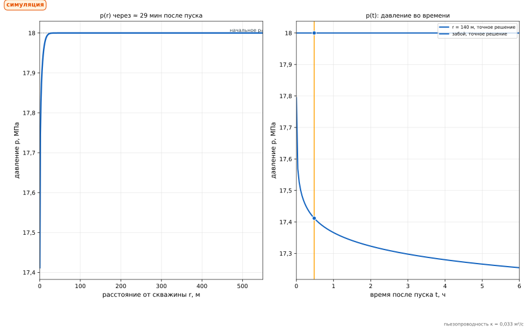
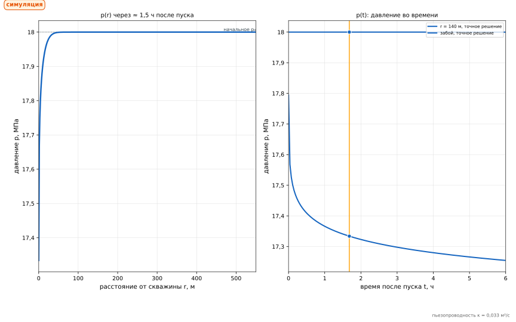
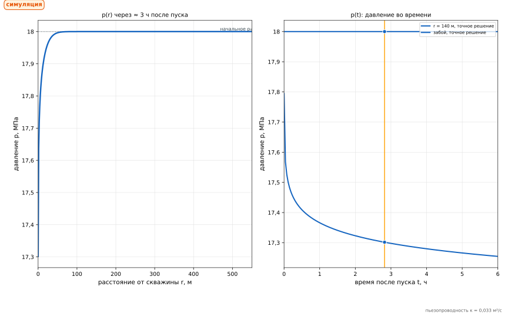
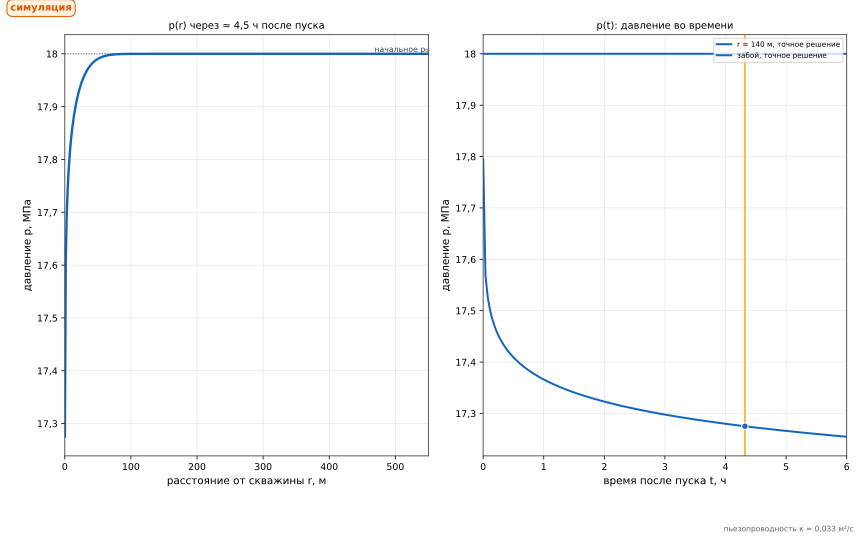
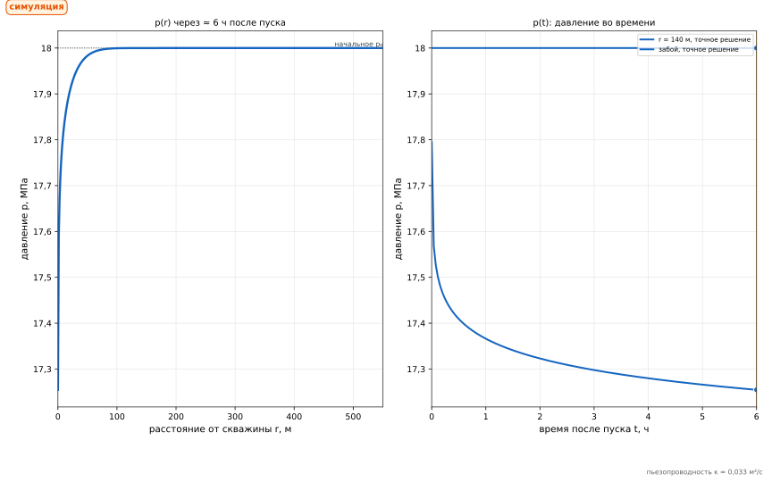
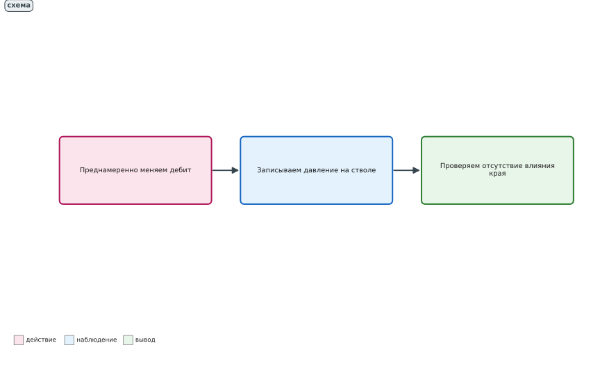

В раннем окне пласт математически кажется бесконечным: граница ещё не влияет на наблюдение.
Для очень малого пласта это допущение нужно проверять особенно внимательно.
Пороговая идея. Бесконечность в модели означает, что граница ещё не повлияла на наблюдение, а не бесконечный геологический объём. модель
Анимация: как это происходит






1 / 6
Пуск показан на ранней части условного окна.
Допущения: Схемы и относительные оси условны; реальные замеры не использованы.; Для иллюстрации выбраны условные свойства и размеры; показан однофазный радиальный отклик без внешней границы, а не график испытания автора..
Как это работает
Как работает модель
Переходный режим: Ранний режим в данном разборе: изменение давления ещё не зависит от внешней границы. Переходный режим относится к короткому периоду после возмущения давления. Возмущение типично создаётся изменением дебита на стволе. Для раннего режима предполагают, что внешняя граница не влияет на отклик. Поэтому в расчёте пласт выглядит бесконечным. стр. 77
«This condition is only applicable for a relatively short period after some pressure disturbance has been created in the reservoir»
«In terms of the radial flow model this disturbance would be typically caused by altering the well's production rate at $r=r_w$»
«In the time for which the transient condition is applicable it is assumed that the pressure response in the reservoir is not affected by the presence of the outer boundary, thus the reservoir appears infinite in extent»
Математика и наблюдения
После преднамеренной смены дебита измеряют и анализируют давление на стволе в течение нескольких часов. Для очень малого пласта допущение независимости от границы может нарушиться. И давление, и его производная по времени зависят от расстояния и времени. стр. 77
«The condition is mainly applied to the analysis of well tests in which the well's production rate is deliberately changed and the resulting pressure response in the wellbore is measured and analysed during a brief period of a few hours after the rate change has occurred»
«Then, unless the reservoir is extremely small, the boundary effects will not be felt and the reservoir is, mathematically, infinite.»
«This gives rise to a complex solution of equ. (5.1) in which both the pressure and pressure derivative, with respect to time, are themselves functions of both position and time, thus»
схема
Меняем дебит → Измеряем давление → Проверяем влияние границы.
Класс B · схема · нарисовано кодом · стр. 77
По шагам
Последовательность действий
Преднамеренно изменить дебит на стволе. стр. 77
Измерять давление на стволе в течение нескольких часов. стр. 77
Проверить, можно ли не учитывать внешнюю границу. стр. 77
Цифры и условия
Для раннего режима предполагают, что внешняя граница не влияет на отклик. Поэтому в расчёте пласт выглядит бесконечным. стр. 77
После преднамеренной смены дебита измеряют и анализируют давление на стволе в течение нескольких часов. стр. 77
Для очень малого пласта допущение независимости от границы может нарушиться. стр. 77
Формулы по книге
$$p = g(r,t)$$
Давление в переходном режиме как функция расстояния и времени. стр. 77
Обозначения
Обозначение
Что это
Единицы
$p$
давление
—
$r$
радиус, расстояние от центра скважины
—
$t$
время после начала отбора
—
$$\frac{\partial p}{\partial t} = f(r,t)$$
Производная давления по времени тоже зависит от расстояния и времени. стр. 77
Обозначения
Обозначение
Что это
Единицы
$p$
давление
—
$r$
радиус, расстояние от центра скважины
—
$t$
время после начала отбора
—
Частая ошибка модель
✗Ошибка: Если в решении пласт бесконечен, то реальной границы не существует.
✓На самом деле: В раннем окне граница ещё не влияет на наблюдаемый отклик. стр. 77
Что это значит для данных по книге
В испытании намеренно меняют дебит и измеряют отклик давления в стволе в течение нескольких часов после изменения.
Вход
Переходный режим относится к короткому периоду после возмущения давления.
Выход
И давление, и его производная по времени зависят от расстояния и времени.
Где ломается
Допущение неприменимо, если участок очень мал и граница влияет уже на ранний отклик.
Где здесь ручной труд специалиста
Входные данные
Переходный режим относится к короткому периоду после возмущения давления.
Ручные шаги
В испытании намеренно меняют дебит и измеряют отклик давления в стволе в течение нескольких часов после изменения.
Точки суждения
Допущение неприменимо, если участок очень мал и граница влияет уже на ранний отклик.
Время
Трудозатраты в источнике не оценены.
Типичные ошибки
Если в решении пласт бесконечен, то реальной границы не существует.
Аналогия модель
В коротком окне локальная модель работает без описания всей системы, пока край не влияет на метрику.
Где аналогия перестаёт работать: Речь о наблюдаемом влиянии границы, а не о волне с фиксированной скоростью.
Новые понятия
дебит (flow rate)
Объём жидкости, добываемой за единицу времени. стр. 77модель
переходный режим (transient flow)
Ранний режим в данном разборе: изменение давления ещё не зависит от внешней границы. стр. 77модель
граничное условие (boundary condition)
Правило на краю области: например, запрет на переток или заданное давление. стр. 77модель
область дренирования (drainage volume)
Участок пласта, с которого в данном режиме поступает жидкость к скважине. стр. 77модель
Проверь себя
Один ответ
Верный ответ: Внешняя граница не влияет на изучаемый отклик
Все утверждения шага с дословной цитатой автора и страницей книги (по PDF).
Переходный режим относится к короткому периоду после возмущения давления. наблюдение
«This condition is only applicable for a relatively short period after some pressure disturbance has been created in the reservoir»
Возмущение типично создаётся изменением дебита на стволе. наблюдение
«In terms of the radial flow model this disturbance would be typically caused by altering the well's production rate at $r=r_w$»
Пока внешняя граница не влияет на отклик, пласт математически выглядит бесконечным. допущение
«In the time for which the transient condition is applicable it is assumed that the pressure response in the reservoir is not affected by the presence of the outer boundary, thus the reservoir appears infinite in extent»
После преднамеренной смены дебита измеряют и анализируют давление на стволе в течение нескольких часов. наблюдение
«The condition is mainly applied to the analysis of well tests in which the well's production rate is deliberately changed and the resulting pressure response in the wellbore is measured and analysed during a brief period of a few hours after the rate change has occurred»
Для очень малого пласта допущение независимости от границы может нарушиться. наблюдение
«Then, unless the reservoir is extremely small, the boundary effects will not be felt and the reservoir is, mathematically, infinite.»
И давление, и его производная по времени зависят от расстояния и времени. наблюдение
«This gives rise to a complex solution of equ. (5.1) in which both the pressure and pressure derivative, with respect to time, are themselves functions of both position and time, thus»
Исходный текст урока
Стр. 77 · a) Transient condition
This condition is only applicable for a relatively short period after some pressure disturbance has been created in the reservoir. In terms of the radial flow model this disturbance would be typically caused by altering the well's production rate at $r=r_w$. In the time for which the transient condition is applicable it is assumed that the pressure response in the reservoir is not affected by the presence of the outer boundary, thus the reservoir appears infinite in extent. The condition is mainly applied to the analysis of well tests in which the well's production rate is deliberately changed and the resulting pressure response in the wellbore is measured and analysed during a brief period of a few hours after the rate change has occurred. Then, unless the reservoir is extremely small, the boundary effects will not be felt and the reservoir is, mathematically, infinite.
Стр. 77 · a) Transient condition
This gives rise to a complex solution of equ. (5.1) in which both the pressure and pressure derivative, with respect to time, are themselves functions of both position and time, thus